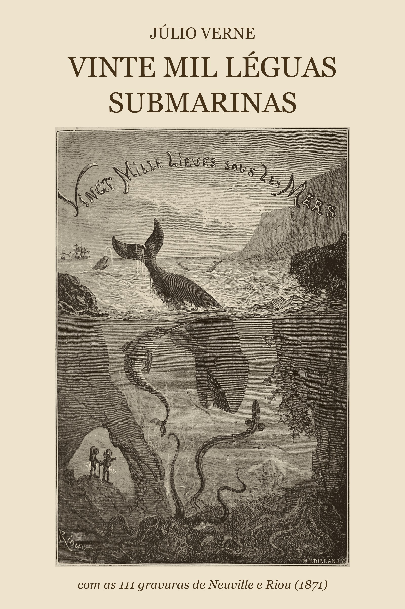

O romance completo em português, traduzido do francês da edição Hetzel de 1871, com as 111 gravuras de Alphonse de Neuville e Édouard Riou. Leia on-line, baixe para o seu leitor, assista à versão narrada ou entre no Nautilus em 3D.
Uma viagem de nove minutos pelo livro, narrada com a voz de Marcelo Rovai, sobre as gravuras de 1871.
Versão em 720p. O original em 1080p pode ser baixado na página de releases.
Duas maneiras de entrar na história.
Os 47 capítulos, das duas partes, com todas as gravuras no lugar em que aparecem na edição original e um sumário clicável. Funciona no celular.
Um modelo do submarino do capitão Nemo construído a partir das medidas que Verne dá no texto. Gire, aproxime, abra os compartimentos e veja as gravuras de cada um. Funciona melhor em computador.
Livre para ler e compartilhar.
Como este trabalho foi feito.